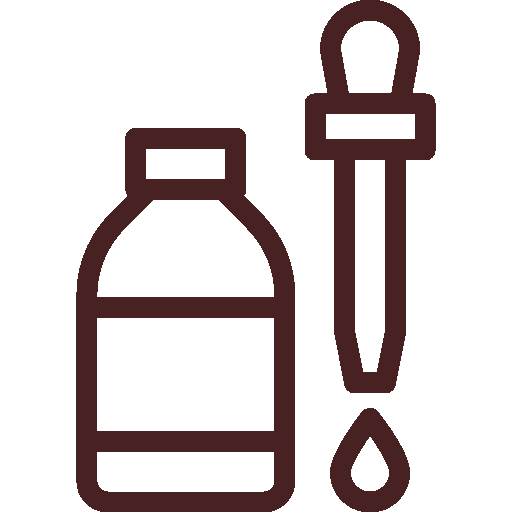
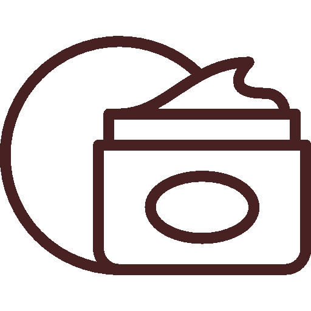

Based on your information...
Here's your medium skincare routine!
After you wake up, in the morning:
Step 1:
Cleanser
A facial cleanser will clean and refresh your skin, removing any dirt or oils and providing a clean slate for products.
Here's our recommendation based on your information:
Step 2:
Serum/topical
A serum or topical is an additional step that utilizes active ingredients to target specific skin concerns.
Here's our recommendation based on your information:
Step 3:
Moisturizer
A coat of moisturizer hydrates and seals in moisture, while protecting from environmental irritants.
Here's our recommendation based on your information:
Step 4:
Sunscreen
Sunscreen protects the skin against UV radiation, which also prevents aging and promotes healthier skin.
Here's our recommendation based on your information:
Before you sleep, night-time:
Step 1:
Cleanser
A facial cleanser will clean and refresh your skin, removing any dirt or oils and providing a clean slate for products.
Here's our recommendation based on your information:
Step 2:
Serum/topical
A serum or topical is an additional step that utilizes active ingredients to target specific skin concerns.
Here's our recommendation based on your information:
Step 3:
Moisturizer
A coat of moisturizer hydrates and seals in moisture, while protecting from environmental irritants.
Here's our recommendation based on your information:
Disclaimer: This website was not made by a medical professional and this skincare routine cannot guarantee you perfect skin. However, it's a good start!
About this website